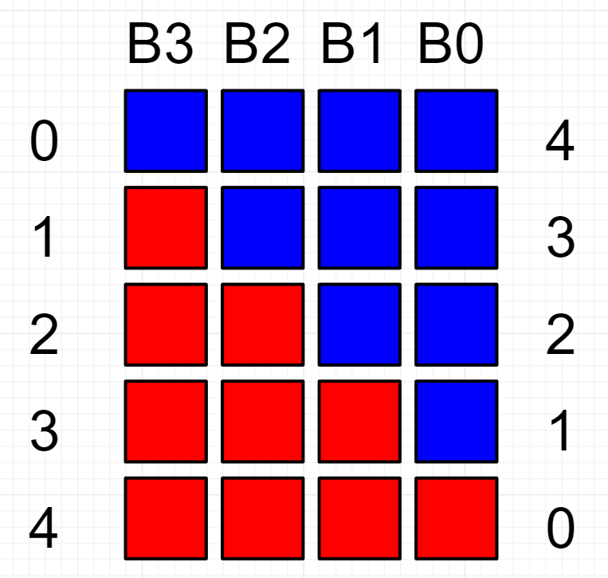
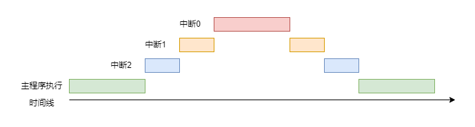
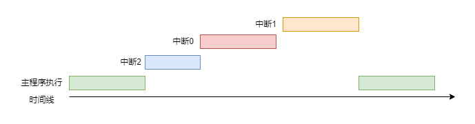
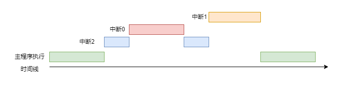

<!DOCTYPE lake>
<h2 data-lake-id="WTjT3" id="WTjT3"><span data-lake-id="u8380c04b" id="u8380c04b">学习目标</span></h2><ol list="u9acd8473"><li data-lake-id="u45e21caa" fid="uc26a6439" id="u45e21caa"><span data-lake-id="uaef83685" id="uaef83685">了解NVIC中断控制器</span></li><li data-lake-id="u1b76ef7d" fid="uc26a6439" id="u1b76ef7d"><span data-lake-id="u92b34469" id="u92b34469">理解优先级概念</span></li><li data-lake-id="u0190b50e" fid="uc26a6439" id="u0190b50e"><span data-lake-id="ud12a7d1d" id="ud12a7d1d">理解优先级分组概念</span></li><li data-lake-id="u2a0a00fa" fid="uc26a6439" id="u2a0a00fa"><span data-lake-id="u4593313a" id="u4593313a">掌握全局优先级分组配置方式</span></li><li data-lake-id="uce21979c" fid="uc26a6439" id="uce21979c"><span data-lake-id="uedfbaacf" id="uedfbaacf">掌握具体中断优先级配置方式</span></li></ol><h2 data-lake-id="gy2UC" id="gy2UC"><span data-lake-id="u216434bc" id="u216434bc">学习内容</span></h2><h3 data-lake-id="Y9p7R" id="Y9p7R"><span data-lake-id="uac311c00" id="uac311c00">NVIC中断控制器</span></h3><p data-lake-id="u76333d96" id="u76333d96"><span class="lake-fontsize-12" data-lake-id="u68af318f" id="u68af318f">NVIC（Nested Vectored Interrupt Controller）是一种嵌套式向量中断控制器，它是用于控制和管理嵌入式设备中的中断的硬件模块。NVIC可以自动地响应中断，并管理中断优先级、中断处理程序等，从而实现多个中断的快速、有序、有效地响应。</span></p><p data-lake-id="uaaadf013" id="uaaadf013"><span class="lake-fontsize-12" data-lake-id="u99de4150" id="u99de4150">NVIC是通过对中断向量表的修改来处理中断的。在NVIC中，中断向量表是一个数组，存储了所有中断处理函数的地址。当一个中断触发时，处理器会在中断向量表中查找对应中断号的处理函数地址，并跳转到该地址执行对应中断的处理。</span></p><p data-lake-id="udbc341b1" id="udbc341b1"><span class="lake-fontsize-12" data-lake-id="ucaee8108" id="ucaee8108">ARM系统的中断，内置的就是这种控制器。</span></p><h3 data-lake-id="M68ct" id="M68ct"><span data-lake-id="ufb728f97" id="ufb728f97">中断优先级</span></h3><p data-lake-id="u6eb59d38" id="u6eb59d38"><span data-lake-id="u7deedf5e" id="u7deedf5e">中断优先级分为抢占优先级，响应优先级和自然优先级</span></p><p data-lake-id="ueed956d3" id="ueed956d3"><br/></p><h4 data-lake-id="jXxGE" id="jXxGE"><span data-lake-id="u00ec18bf" id="u00ec18bf">抢占优先级</span></h4><p data-lake-id="ub2fe6866" id="ub2fe6866"><span data-lake-id="u07cdbef3" id="u07cdbef3">抢占优先级用于确定在多个中断请求同时发生时，哪个中断可以打断当前正在执行的中断。具有更高抢占优先级的中断请求可以</span><strong><span data-lake-id="u9f088a21" id="u9f088a21" style="color: #DF2A3F">抢占</span></strong><span data-lake-id="ue9ea210f" id="ue9ea210f">正在执行的较低抢占优先级的中断。这个机制允许高优先级的任务在需要时能够</span><strong><span data-lake-id="udd275676" id="udd275676">立即</span></strong><span data-lake-id="u89fd6cbb" id="u89fd6cbb">得到处理。</span></p><h4 data-lake-id="LHJ1V" id="LHJ1V"><span data-lake-id="u9a7a3467" id="u9a7a3467">响应优先级</span></h4><p data-lake-id="u454c1712" id="u454c1712"><span data-lake-id="u85517483" id="u85517483">响应优先级用于确定中断请求被接收并开始执行的优先级。在多中断环境中，不同中断请求可能同时发生，系统需要根据响应优先级来决定哪个中断会首先得到处理。但响应优先级</span><strong><span data-lake-id="u8a40a5f0" id="u8a40a5f0">不会</span></strong><span data-lake-id="u055619d9" id="u055619d9">导致中断处理的打断，它仅在中断请求同时发生且抢占优先级相同时决定处理顺序。</span></p><h4 data-lake-id="EnVPI" id="EnVPI"><span data-lake-id="u94fd8296" id="u94fd8296">自然优先级</span></h4><p data-lake-id="uacd24320" id="uacd24320"><span data-lake-id="ue7fd47c5" id="ue7fd47c5">自然优先级实际上是中断向量表的序号，序号越小优先级越高。</span></p><p data-lake-id="u6bd26ef6" id="u6bd26ef6"><br/></p><blockquote class="lake-alert lake-alert-color2" data-lake-id="ub6194476" id="ub6194476"><p data-lake-id="udf61ea51" id="udf61ea51"><span data-lake-id="u07997a97" id="u07997a97">优先级的界定： 无论是抢占优先级还是响应优先级，都是用数值表示的，数值越小，优先级越高。</span></p></blockquote><p data-lake-id="ue49b725a" id="ue49b725a"><span data-lake-id="u43883ea1" id="u43883ea1">​</span><br/></p><h3 data-lake-id="lnUdp" id="lnUdp"><span data-lake-id="u202898d8" id="u202898d8">优先级分组</span></h3><p data-lake-id="ue57727c1" id="ue57727c1"><span data-lake-id="u33a6d566" id="u33a6d566">优先级分组主要是说明抢占优先级和响应优先级的关系。</span></p><p data-lake-id="u9ba734fa" id="u9ba734fa"><span data-lake-id="u31d5200a" id="u31d5200a">在ARM中，为了表示抢占优先级和响应优先级，仅用了4个Bit表示了优先级的等级。</span></p><p data-lake-id="ua3261fef" id="ua3261fef"></p><table class="lake-table" data-lake-id="JFszL" id="JFszL" margin="true" style="width: 488px" width-mode="contain"><colgroup><col width="108"/><col width="78"/><col width="106"/><col width="76"/><col width="120"/></colgroup><tbody><tr data-lake-id="u4177eec8" id="u4177eec8"><td data-lake-id="uebb9ee46" id="uebb9ee46" rowspan="2" style="vertical-align: middle"><p data-lake-id="uf42b6e1d" id="uf42b6e1d" style="text-align: center"><span data-lake-id="ue28aec66" id="ue28aec66">优先级分组</span></p></td><td colspan="2" data-lake-id="u3bf3dffb" id="u3bf3dffb" style="vertical-align: middle"><p data-lake-id="uc68f6f15" id="uc68f6f15" style="text-align: center"><span data-lake-id="ua549242c" id="ua549242c">抢占优先级</span></p></td><td colspan="2" data-lake-id="u13a7b0cf" id="u13a7b0cf" style="vertical-align: middle"><p data-lake-id="u106fc55f" id="u106fc55f" style="text-align: center"><span data-lake-id="u8f6fbb37" id="u8f6fbb37">响应优先级</span></p></td></tr><tr data-lake-id="u59076115" id="u59076115"><td data-lake-id="u9830d6c4" id="u9830d6c4" style="vertical-align: middle"><p data-lake-id="u4c6de381" id="u4c6de381" style="text-align: center"><span data-lake-id="ufaf97393" id="ufaf97393">位数</span></p></td><td data-lake-id="u45cb2a04" id="u45cb2a04" style="vertical-align: middle"><p data-lake-id="u692bbdd6" id="u692bbdd6" style="text-align: center"><span data-lake-id="ua7c121cd" id="ua7c121cd">范围</span></p></td><td data-lake-id="u47d8e301" id="u47d8e301" style="vertical-align: middle"><p data-lake-id="ub1acc671" id="ub1acc671" style="text-align: center"><span data-lake-id="u5f7f2a7e" id="u5f7f2a7e">位数</span></p></td><td data-lake-id="u104cea06" id="u104cea06" style="vertical-align: middle"><p data-lake-id="ub24dc1be" id="ub24dc1be" style="text-align: center"><span data-lake-id="u3e2a58e7" id="u3e2a58e7">范围</span></p></td></tr><tr data-lake-id="u2681471f" id="u2681471f"><td data-lake-id="ub4d40400" id="ub4d40400" style="vertical-align: middle"><p data-lake-id="u7801e692" id="u7801e692" style="text-align: center"><span data-lake-id="u85301ea9" id="u85301ea9">分组0</span></p></td><td data-lake-id="ufac4b2bf" id="ufac4b2bf" style="vertical-align: middle"><p data-lake-id="ufb312da4" id="ufb312da4" style="text-align: center"><span data-lake-id="u655a2fc9" id="u655a2fc9">0bit</span></p></td><td data-lake-id="uefdbcb09" id="uefdbcb09" style="vertical-align: middle"><p data-lake-id="uaac83e87" id="uaac83e87" style="text-align: center"><span data-lake-id="uffe06780" id="uffe06780">NONE</span></p></td><td data-lake-id="u2293523b" id="u2293523b" style="vertical-align: middle"><p data-lake-id="u3e46a68c" id="u3e46a68c" style="text-align: center"><span data-lake-id="ua2257ca1" id="ua2257ca1">4bit</span></p></td><td data-lake-id="ucbac0a4d" id="ucbac0a4d" style="vertical-align: middle"><p data-lake-id="uef2a4939" id="uef2a4939" style="text-align: center"><span data-lake-id="u784ff2d2" id="u784ff2d2">[0,15]</span></p></td></tr><tr data-lake-id="u34497edd" id="u34497edd"><td data-lake-id="u3de7dd93" id="u3de7dd93" style="vertical-align: middle"><p data-lake-id="u31e4f4fc" id="u31e4f4fc" style="text-align: center"><span data-lake-id="u3d662b0d" id="u3d662b0d">分组1</span></p></td><td data-lake-id="u5c3ac8a8" id="u5c3ac8a8" style="vertical-align: middle"><p data-lake-id="u8d1933f3" id="u8d1933f3" style="text-align: center"><span data-lake-id="uc7cae28e" id="uc7cae28e">1bit</span></p></td><td data-lake-id="u7e63fafe" id="u7e63fafe" style="vertical-align: middle"><p data-lake-id="ua07c5176" id="ua07c5176" style="text-align: center"><span data-lake-id="u91053d53" id="u91053d53">[0,1]</span></p></td><td data-lake-id="u40303bd7" id="u40303bd7" style="vertical-align: middle"><p data-lake-id="uc3bc465e" id="uc3bc465e" style="text-align: center"><span data-lake-id="u3a4dc376" id="u3a4dc376">3bit</span></p></td><td data-lake-id="ucfdbb3e3" id="ucfdbb3e3" style="vertical-align: middle"><p data-lake-id="u08118e3e" id="u08118e3e" style="text-align: center"><span data-lake-id="u15e1bf89" id="u15e1bf89">[0,7]</span></p></td></tr><tr data-lake-id="u5dd12fba" id="u5dd12fba"><td data-lake-id="u413f59ad" id="u413f59ad" style="vertical-align: middle"><p data-lake-id="ub1a5d6df" id="ub1a5d6df" style="text-align: center"><span data-lake-id="ufd052968" id="ufd052968">分组2</span></p></td><td data-lake-id="u47efd4f7" id="u47efd4f7" style="vertical-align: middle"><p data-lake-id="ud3b01257" id="ud3b01257" style="text-align: center"><span data-lake-id="u04a35526" id="u04a35526">2bit</span></p></td><td data-lake-id="u1cb2164d" id="u1cb2164d" style="vertical-align: middle"><p data-lake-id="ud4f39399" id="ud4f39399" style="text-align: center"><span data-lake-id="u89541265" id="u89541265">[0,3]</span></p></td><td data-lake-id="u89cf5e4e" id="u89cf5e4e" style="vertical-align: middle"><p data-lake-id="u6c512ab5" id="u6c512ab5" style="text-align: center"><span data-lake-id="u81fe2872" id="u81fe2872">2bit</span></p></td><td data-lake-id="ud12d5139" id="ud12d5139" style="vertical-align: middle"><p data-lake-id="uc638837d" id="uc638837d" style="text-align: center"><span data-lake-id="u4522e321" id="u4522e321">[0,3]</span></p></td></tr><tr data-lake-id="uf3c2477f" id="uf3c2477f"><td data-lake-id="uced29cd4" id="uced29cd4" style="vertical-align: middle"><p data-lake-id="u2b7097bb" id="u2b7097bb" style="text-align: center"><span data-lake-id="ucd61ef0a" id="ucd61ef0a">分组3</span></p></td><td data-lake-id="u66c341d8" id="u66c341d8" style="vertical-align: middle"><p data-lake-id="ueb293fb1" id="ueb293fb1" style="text-align: center"><span data-lake-id="u68418b51" id="u68418b51">3bit</span></p></td><td data-lake-id="u1295fcc2" id="u1295fcc2" style="vertical-align: middle"><p data-lake-id="u7d4d5f8c" id="u7d4d5f8c" style="text-align: center"><span data-lake-id="ubbaae566" id="ubbaae566">[0,7]</span></p></td><td data-lake-id="ua2ae7971" id="ua2ae7971" style="vertical-align: middle"><p data-lake-id="ub70bb34a" id="ub70bb34a" style="text-align: center"><span data-lake-id="u05de83a3" id="u05de83a3">1bit</span></p></td><td data-lake-id="ue84d23b9" id="ue84d23b9" style="vertical-align: middle"><p data-lake-id="ufe0f3270" id="ufe0f3270" style="text-align: center"><span data-lake-id="u3c9acd9e" id="u3c9acd9e">[0,1]</span></p></td></tr><tr data-lake-id="u5f2ed5cc" id="u5f2ed5cc"><td data-lake-id="ufee1e077" id="ufee1e077" style="vertical-align: middle"><p data-lake-id="ufdd3bc9f" id="ufdd3bc9f" style="text-align: center"><span data-lake-id="ubed6f787" id="ubed6f787">分组4</span></p></td><td data-lake-id="u5cb4267a" id="u5cb4267a" style="vertical-align: middle"><p data-lake-id="u6a4b8e37" id="u6a4b8e37" style="text-align: center"><span data-lake-id="ua2b0c8ff" id="ua2b0c8ff">4bit</span></p></td><td data-lake-id="uf58d6d3d" id="uf58d6d3d" style="vertical-align: middle"><p data-lake-id="ub5706424" id="ub5706424" style="text-align: center"><span data-lake-id="u7495f275" id="u7495f275">[0,15]</span></p></td><td data-lake-id="u550fa689" id="u550fa689" style="vertical-align: middle"><p data-lake-id="u33def44f" id="u33def44f" style="text-align: center"><span data-lake-id="u6e4fc359" id="u6e4fc359">0bit</span></p></td><td data-lake-id="u573cc431" id="u573cc431" style="vertical-align: middle"><p data-lake-id="u29d39582" id="u29d39582" style="text-align: center"><span data-lake-id="u1da718ae" id="u1da718ae">NONE</span></p></td></tr></tbody></table><p data-lake-id="u25b7fd60" id="u25b7fd60"><span data-lake-id="u93a38a6e" id="u93a38a6e">在代码中我们可以对全局进行中断优先级分组:</span></p><span class="yuque-card-unsupported">[codeblock]</span><p data-lake-id="uf5c7cd7f" id="uf5c7cd7f"><span data-lake-id="u5b819172" id="u5b819172">对与具体的中断，我们可以进行配置抢占和响应优先级</span></p><span class="yuque-card-unsupported">[codeblock]</span><h3 data-lake-id="mGUE1" id="mGUE1"><span data-lake-id="ub5087d8b" id="ub5087d8b">案例准备</span></h3><ol list="u59667846"><li data-lake-id="u782e6e97" fid="u2b252012" id="u782e6e97"><span data-lake-id="u46f2b7cd" id="u46f2b7cd">创建多个外部中断</span></li><li data-lake-id="u49477a78" fid="u2b252012" id="u49477a78"><span data-lake-id="u32dc7d88" id="u32dc7d88">配置不同的中断优先级</span></li><li data-lake-id="u02db926a" fid="u2b252012" id="u02db926a"><span data-lake-id="ucb9b2a7e" id="ucb9b2a7e">中断中进行耗时操作（不对的行为，仅仅是用来观察执行结果）</span></li><li data-lake-id="u1aed72d9" fid="u2b252012" id="u1aed72d9"><span data-lake-id="uc99f20dd" id="uc99f20dd">比较中断执行</span></li></ol><h4 data-lake-id="V7wpr" id="V7wpr"><span data-lake-id="u5b31c516" id="u5b31c516">外部中断级别逻辑</span></h4><span class="yuque-card-unsupported">[codeblock]</span><span class="yuque-card-unsupported">[codeblock]</span><span class="yuque-card-unsupported">[codeblock]</span><h4 data-lake-id="PXjCl" id="PXjCl"><span data-lake-id="udc036200" id="udc036200">串口接收中断逻辑</span></h4><span class="yuque-card-unsupported">[codeblock]</span><h3 data-lake-id="oBLay" id="oBLay"><span data-lake-id="u26cb1725" id="u26cb1725">测试一</span></h3><table class="lake-table" data-lake-id="gYIC9" id="gYIC9" margin="true" style="width: 578px" width-mode="contain"><colgroup><col width="126"/><col width="144"/><col width="148"/><col width="160"/></colgroup><tbody><tr data-lake-id="uef826c41" id="uef826c41"><td data-lake-id="ue652ef2b" id="ue652ef2b" style="vertical-align: middle"><p data-lake-id="ub33773de" id="ub33773de" style="text-align: center"><span data-lake-id="u973fd2bc" id="u973fd2bc">中断类型</span></p></td><td data-lake-id="u91cca8c5" id="u91cca8c5" style="vertical-align: middle"><p data-lake-id="u36104e25" id="u36104e25" style="text-align: center"><span data-lake-id="ua94bc85b" id="ua94bc85b">全局优先级分组</span></p></td><td data-lake-id="u303e2e9a" id="u303e2e9a" style="vertical-align: middle"><p data-lake-id="u8d800220" id="u8d800220" style="text-align: center"><span data-lake-id="u7cb6e3e1" id="u7cb6e3e1">抢占优先级</span></p></td><td data-lake-id="uc0438db3" id="uc0438db3" style="vertical-align: middle"><p data-lake-id="u77e07ec4" id="u77e07ec4" style="text-align: center"><span data-lake-id="u74bc4c90" id="u74bc4c90">响应优先级</span></p></td></tr><tr data-lake-id="u8b694f6e" id="u8b694f6e"><td data-lake-id="u1ed0869f" id="u1ed0869f" style="vertical-align: middle"><p data-lake-id="u4dcc851a" id="u4dcc851a" style="text-align: center"><span data-lake-id="ue0c027be" id="ue0c027be">串口接收</span></p></td><td data-lake-id="u36e4bc35" id="u36e4bc35" rowspan="4" style="vertical-align: middle"><p data-lake-id="ud43b8307" id="ud43b8307" style="text-align: center"><span data-lake-id="u3f266ba2" id="u3f266ba2">分组2</span></p></td><td data-lake-id="u5342c521" id="u5342c521" style="vertical-align: middle"><p data-lake-id="u2714f97b" id="u2714f97b" style="text-align: center"><span data-lake-id="u1fb50307" id="u1fb50307">0</span></p></td><td data-lake-id="udb0d93ed" id="udb0d93ed" style="vertical-align: middle"><p data-lake-id="u76c0b6f1" id="u76c0b6f1" style="text-align: center"><span data-lake-id="ueec86f84" id="ueec86f84">0</span></p></td></tr><tr data-lake-id="u06f11ef1" id="u06f11ef1"><td data-lake-id="u9be1cab8" id="u9be1cab8" style="vertical-align: middle"><p data-lake-id="uffdf049b" id="uffdf049b" style="text-align: center"><span data-lake-id="ufb9f15d7" id="ufb9f15d7">外部中断0</span></p></td><td data-lake-id="ued1e1321" id="ued1e1321" style="vertical-align: middle"><p data-lake-id="u0ee14117" id="u0ee14117" style="text-align: center"><span data-lake-id="u943b81eb" id="u943b81eb">1</span></p></td><td data-lake-id="uea42b3c7" id="uea42b3c7" style="vertical-align: middle"><p data-lake-id="ua902f104" id="ua902f104" style="text-align: center"><span data-lake-id="u50a0d09d" id="u50a0d09d">0</span></p></td></tr><tr data-lake-id="u07c7d2bd" id="u07c7d2bd"><td data-lake-id="uc204a0de" id="uc204a0de" style="vertical-align: middle"><p data-lake-id="ud8f35724" id="ud8f35724" style="text-align: center"><span data-lake-id="ub92cef5f" id="ub92cef5f">外部中断1</span></p></td><td data-lake-id="u96347ee7" id="u96347ee7" style="vertical-align: middle"><p data-lake-id="u5331acfc" id="u5331acfc" style="text-align: center"><span data-lake-id="uf396d5af" id="uf396d5af">2</span></p></td><td data-lake-id="u46567b0f" id="u46567b0f" style="vertical-align: middle"><p data-lake-id="uc4bebfc8" id="uc4bebfc8" style="text-align: center"><span data-lake-id="u53ac2946" id="u53ac2946">0</span></p></td></tr><tr data-lake-id="u1a4aa770" id="u1a4aa770"><td data-lake-id="u1b35cccf" id="u1b35cccf" style="vertical-align: middle"><p data-lake-id="u234e6e1b" id="u234e6e1b" style="text-align: center"><span data-lake-id="ue92f40ad" id="ue92f40ad">外部中断2</span></p></td><td data-lake-id="uae7daa0c" id="uae7daa0c" style="vertical-align: middle"><p data-lake-id="u1d5091fd" id="u1d5091fd" style="text-align: center"><span data-lake-id="u968f0f5b" id="u968f0f5b">3</span></p></td><td data-lake-id="uf3c196e4" id="uf3c196e4" style="vertical-align: middle"><p data-lake-id="ue4f2fea0" id="ue4f2fea0" style="text-align: center"><span data-lake-id="u9620f6e9" id="u9620f6e9">0</span></p></td></tr></tbody></table><span class="yuque-card-unsupported">[codeblock]</span><p data-lake-id="u99e1784b" id="u99e1784b"><span data-lake-id="u1ccb5d2e" id="u1ccb5d2e">响应优先级相同，抢占优先级不同，测试不同的结果。</span></p><h4 data-lake-id="YO1Pf" id="YO1Pf"><span data-lake-id="u11d9395e" id="u11d9395e">测试逻辑</span></h4><p data-lake-id="ua9a379b5" id="ua9a379b5"><span data-lake-id="u75d2dee5" id="u75d2dee5">通过串口，依次控制先执行 </span><code data-lake-id="u1f9b0a30" id="u1f9b0a30"><span data-lake-id="u04fedc0c" id="u04fedc0c">外部中断2</span></code><span data-lake-id="ub61fc17b" id="ub61fc17b">,</span><code data-lake-id="u3622c43e" id="u3622c43e"><span data-lake-id="uaf405a86" id="uaf405a86">外部中断1</span></code><span data-lake-id="uf7e4cfe2" id="uf7e4cfe2">,</span><code data-lake-id="u7bbe1d61" id="u7bbe1d61"><span data-lake-id="u64949b72" id="u64949b72">外部中断0</span></code><span data-lake-id="uf633cc1d" id="uf633cc1d">,观察打印输出结果。</span></p><h4 data-lake-id="vIJXQ" id="vIJXQ"><span data-lake-id="u8419d93f" id="u8419d93f">结论</span></h4><ul list="ua650a6e6"><li data-lake-id="u0172fb9a" fid="u7956d709" id="u0172fb9a"><span data-lake-id="u0f3144cb" id="u0f3144cb">抢占优先级数值越小，优先级高</span></li><li data-lake-id="u9b46f775" fid="u7956d709" id="u9b46f775"><span data-lake-id="ua4106a15" id="ua4106a15">抢占优先级高的中断，可以打断优先级低的，先执行，执行完成后，其他中断接着执行</span></li></ul><p data-lake-id="ua63ab0fe" id="ua63ab0fe"></p><h3 data-lake-id="yo96O" id="yo96O"><span data-lake-id="ubf9b20ab" id="ubf9b20ab">测试二</span></h3><table class="lake-table" data-lake-id="jTj52" id="jTj52" margin="true" style="width: 578px" width-mode="contain"><colgroup><col width="126"/><col width="144"/><col width="148"/><col width="160"/></colgroup><tbody><tr data-lake-id="u54b6296d" id="u54b6296d"><td data-lake-id="u4543b3e2" id="u4543b3e2" style="vertical-align: middle"><p data-lake-id="u79bc1ae3" id="u79bc1ae3" style="text-align: center"><span data-lake-id="u299d53e8" id="u299d53e8">中断类型</span></p></td><td data-lake-id="uf79fb19f" id="uf79fb19f" style="vertical-align: middle"><p data-lake-id="u5b6b7b08" id="u5b6b7b08" style="text-align: center"><span data-lake-id="ua90e24f8" id="ua90e24f8">全局优先级分组</span></p></td><td data-lake-id="uaa069384" id="uaa069384" style="vertical-align: middle"><p data-lake-id="u6efc6d3b" id="u6efc6d3b" style="text-align: center"><span data-lake-id="u6f22b9c0" id="u6f22b9c0">抢占优先级</span></p></td><td data-lake-id="uf550a0f1" id="uf550a0f1" style="vertical-align: middle"><p data-lake-id="ua1bee269" id="ua1bee269" style="text-align: center"><span data-lake-id="u02052f36" id="u02052f36">响应优先级</span></p></td></tr><tr data-lake-id="uc8df021c" id="uc8df021c"><td data-lake-id="ub4440c9a" id="ub4440c9a" style="vertical-align: middle"><p data-lake-id="u6d4755a3" id="u6d4755a3" style="text-align: center"><span data-lake-id="u97d25656" id="u97d25656">串口接收</span></p></td><td data-lake-id="ua99cd008" id="ua99cd008" rowspan="4" style="vertical-align: middle"><p data-lake-id="u929e49b4" id="u929e49b4" style="text-align: center"><span data-lake-id="ub265566b" id="ub265566b">分组2</span></p></td><td data-lake-id="ubbfaf4ba" id="ubbfaf4ba" style="vertical-align: middle"><p data-lake-id="u3adfbe43" id="u3adfbe43" style="text-align: center"><span data-lake-id="ue20f7407" id="ue20f7407">0</span></p></td><td data-lake-id="ufe74b2af" id="ufe74b2af" style="vertical-align: middle"><p data-lake-id="ua414eb49" id="ua414eb49" style="text-align: center"><span data-lake-id="u7cce367b" id="u7cce367b">0</span></p></td></tr><tr data-lake-id="u3fd03294" id="u3fd03294"><td data-lake-id="ude59f7a6" id="ude59f7a6" style="vertical-align: middle"><p data-lake-id="u4b3b4a19" id="u4b3b4a19" style="text-align: center"><span data-lake-id="u3f3ca0e7" id="u3f3ca0e7">外部中断0</span></p></td><td data-lake-id="ubcea5443" id="ubcea5443" style="vertical-align: middle"><p data-lake-id="u1298cbc5" id="u1298cbc5" style="text-align: center"><span data-lake-id="u696a1382" id="u696a1382">2</span></p></td><td data-lake-id="u45e48f8e" id="u45e48f8e" style="vertical-align: middle"><p data-lake-id="u3deeabda" id="u3deeabda" style="text-align: center"><span data-lake-id="ua141494c" id="ua141494c">0</span></p></td></tr><tr data-lake-id="u74c1a03c" id="u74c1a03c"><td data-lake-id="u070ac44f" id="u070ac44f" style="vertical-align: middle"><p data-lake-id="u72ac109e" id="u72ac109e" style="text-align: center"><span data-lake-id="u4d7e396b" id="u4d7e396b">外部中断1</span></p></td><td data-lake-id="u3103d61d" id="u3103d61d" style="vertical-align: middle"><p data-lake-id="ua0a8b6f4" id="ua0a8b6f4" style="text-align: center"><span data-lake-id="uc2acb962" id="uc2acb962">2</span></p></td><td data-lake-id="ub0ef97dd" id="ub0ef97dd" style="vertical-align: middle"><p data-lake-id="u1806e4ec" id="u1806e4ec" style="text-align: center"><span data-lake-id="u9d1c9bbf" id="u9d1c9bbf">1</span></p></td></tr><tr data-lake-id="u400f74f9" id="u400f74f9"><td data-lake-id="ub7874260" id="ub7874260" style="vertical-align: middle"><p data-lake-id="u5ed4f654" id="u5ed4f654" style="text-align: center"><span data-lake-id="u61c4ee44" id="u61c4ee44">外部中断2</span></p></td><td data-lake-id="udfb51b1d" id="udfb51b1d" style="vertical-align: middle"><p data-lake-id="u613e7474" id="u613e7474" style="text-align: center"><span data-lake-id="uda8db777" id="uda8db777">2</span></p></td><td data-lake-id="u33c9a5d4" id="u33c9a5d4" style="vertical-align: middle"><p data-lake-id="ue365c293" id="ue365c293" style="text-align: center"><span data-lake-id="u0386193a" id="u0386193a">2</span></p></td></tr></tbody></table><span class="yuque-card-unsupported">[codeblock]</span><p data-lake-id="ubc7ca04a" id="ubc7ca04a"><span data-lake-id="u76855f30" id="u76855f30">响应优先级相同，抢占优先级不同，测试不同的结果。</span></p><h4 data-lake-id="FhJUW" id="FhJUW"><span data-lake-id="u8529f863" id="u8529f863">测试逻辑</span></h4><p data-lake-id="u3256f7ea" id="u3256f7ea"><span data-lake-id="u1cc0bfdb" id="u1cc0bfdb">通过串口，依次控制先执行 </span><code data-lake-id="uc0335b6d" id="uc0335b6d"><span data-lake-id="u9e49e77a" id="u9e49e77a">外部中断2</span></code><span data-lake-id="u68361709" id="u68361709">,</span><code data-lake-id="ueeaadfdf" id="ueeaadfdf"><span data-lake-id="u5e469b78" id="u5e469b78">外部中断1</span></code><span data-lake-id="u5c8c3b52" id="u5c8c3b52">,</span><code data-lake-id="uba34ec70" id="uba34ec70"><span data-lake-id="u34b8f503" id="u34b8f503">外部中断0</span></code><span data-lake-id="u7b075331" id="u7b075331">,观察打印输出结果。</span></p><h4 data-lake-id="xXeWK" id="xXeWK"><span data-lake-id="u843f10fd" id="u843f10fd">结论</span></h4><ul list="u1c6a57be"><li data-lake-id="ud8bbc514" fid="u7956d709" id="ud8bbc514"><span data-lake-id="u39213eb1" id="u39213eb1">响应优先级数值越小，优先级高</span></li><li data-lake-id="u79706062" fid="u7956d709" id="u79706062"><span data-lake-id="u29b87598" id="u29b87598">响应优先级高的中断，在中断排队时，享有更靠前的优先级</span></li></ul><p data-lake-id="u1de8d42c" id="u1de8d42c"></p><h3 data-lake-id="N2kP0" id="N2kP0"><span data-lake-id="uc0bfa406" id="uc0bfa406">测试三</span></h3><table class="lake-table" data-lake-id="tPpC4" id="tPpC4" margin="true" style="width: 578px" width-mode="contain"><colgroup><col width="126"/><col width="144"/><col width="148"/><col width="160"/></colgroup><tbody><tr data-lake-id="ued3a6697" id="ued3a6697"><td data-lake-id="u3675a38e" id="u3675a38e" style="vertical-align: middle"><p data-lake-id="u444d3f06" id="u444d3f06" style="text-align: center"><span data-lake-id="u4b101036" id="u4b101036">中断类型</span></p></td><td data-lake-id="u2f41b8f3" id="u2f41b8f3" style="vertical-align: middle"><p data-lake-id="u1207b58a" id="u1207b58a" style="text-align: center"><span data-lake-id="u04a10509" id="u04a10509">全局优先级分组</span></p></td><td data-lake-id="u71bade0a" id="u71bade0a" style="vertical-align: middle"><p data-lake-id="ufe51d345" id="ufe51d345" style="text-align: center"><span data-lake-id="udcc8e269" id="udcc8e269">抢占优先级</span></p></td><td data-lake-id="u302841fe" id="u302841fe" style="vertical-align: middle"><p data-lake-id="u2073b001" id="u2073b001" style="text-align: center"><span data-lake-id="u27835974" id="u27835974">响应优先级</span></p></td></tr><tr data-lake-id="u6f1fdba0" id="u6f1fdba0"><td data-lake-id="u4c5bb6cb" id="u4c5bb6cb" style="vertical-align: middle"><p data-lake-id="u6f8dd94d" id="u6f8dd94d" style="text-align: center"><span data-lake-id="uecd33096" id="uecd33096">串口接收</span></p></td><td data-lake-id="uce1f3a7f" id="uce1f3a7f" rowspan="4" style="vertical-align: middle"><p data-lake-id="u6578e326" id="u6578e326" style="text-align: center"><span data-lake-id="uefc5b2b8" id="uefc5b2b8">分组2</span></p></td><td data-lake-id="u94016ca0" id="u94016ca0" style="vertical-align: middle"><p data-lake-id="u9cd00002" id="u9cd00002" style="text-align: center"><span data-lake-id="uc98efefb" id="uc98efefb">0</span></p></td><td data-lake-id="u9c6432c2" id="u9c6432c2" style="vertical-align: middle"><p data-lake-id="ucbf72b91" id="ucbf72b91" style="text-align: center"><span data-lake-id="u03f55688" id="u03f55688">0</span></p></td></tr><tr data-lake-id="ubd7fae67" id="ubd7fae67"><td data-lake-id="u9c1543c8" id="u9c1543c8" style="vertical-align: middle"><p data-lake-id="u5acfb1ea" id="u5acfb1ea" style="text-align: center"><span data-lake-id="ubeb721b6" id="ubeb721b6">外部中断0</span></p></td><td data-lake-id="u0f519547" id="u0f519547" style="vertical-align: middle"><p data-lake-id="u44345723" id="u44345723" style="text-align: center"><span data-lake-id="u2fc640df" id="u2fc640df">1</span></p></td><td data-lake-id="uca2dcfd6" id="uca2dcfd6" style="vertical-align: middle"><p data-lake-id="u4a53f0bf" id="u4a53f0bf" style="text-align: center"><span data-lake-id="uc207c2c9" id="uc207c2c9">0</span></p></td></tr><tr data-lake-id="ue4a74343" id="ue4a74343"><td data-lake-id="uc8259f3a" id="uc8259f3a" style="vertical-align: middle"><p data-lake-id="u53a55864" id="u53a55864" style="text-align: center"><span data-lake-id="ufb3898bd" id="ufb3898bd">外部中断1</span></p></td><td data-lake-id="ub60eecc9" id="ub60eecc9" style="vertical-align: middle"><p data-lake-id="ub4d6a0e4" id="ub4d6a0e4" style="text-align: center"><span data-lake-id="u819bfe4b" id="u819bfe4b">2</span></p></td><td data-lake-id="ub059d7be" id="ub059d7be" style="vertical-align: middle"><p data-lake-id="u1ab204e6" id="u1ab204e6" style="text-align: center"><span data-lake-id="u07c19217" id="u07c19217">1</span></p></td></tr><tr data-lake-id="u0b382a0d" id="u0b382a0d"><td data-lake-id="ue33c410c" id="ue33c410c" style="vertical-align: middle"><p data-lake-id="uff096fe0" id="uff096fe0" style="text-align: center"><span data-lake-id="uee9d24f5" id="uee9d24f5">外部中断2</span></p></td><td data-lake-id="u960ed292" id="u960ed292" style="vertical-align: middle"><p data-lake-id="u6a52a230" id="u6a52a230" style="text-align: center"><span data-lake-id="u04f20ee1" id="u04f20ee1">2</span></p></td><td data-lake-id="u764d9bab" id="u764d9bab" style="vertical-align: middle"><p data-lake-id="uda7dd709" id="uda7dd709" style="text-align: center"><span data-lake-id="u71f33d00" id="u71f33d00">2</span></p></td></tr></tbody></table><span class="yuque-card-unsupported">[codeblock]</span><p data-lake-id="uf393a37a" id="uf393a37a"><span data-lake-id="udde90b66" id="udde90b66">响应优先级相同，抢占优先级不同，测试不同的结果。</span></p><h4 data-lake-id="XW54K" id="XW54K"><span data-lake-id="u446fbefb" id="u446fbefb">测试逻辑</span></h4><p data-lake-id="u1531e210" id="u1531e210"><span data-lake-id="u879b515a" id="u879b515a">通过串口，依次控制先执行 </span><code data-lake-id="u0f906f2f" id="u0f906f2f"><span data-lake-id="ud14d8caf" id="ud14d8caf">外部中断2</span></code><span data-lake-id="u874663ce" id="u874663ce">,</span><code data-lake-id="ud7fcafe1" id="ud7fcafe1"><span data-lake-id="u7292fff6" id="u7292fff6">外部中断1</span></code><span data-lake-id="uf2c267ed" id="uf2c267ed">,</span><code data-lake-id="uc3dee54c" id="uc3dee54c"><span data-lake-id="u321829c5" id="u321829c5">外部中断0</span></code><span data-lake-id="ufb55b329" id="ufb55b329">,观察打印输出结果。</span></p><h4 data-lake-id="KefGK" id="KefGK"><span data-lake-id="u20ae7290" id="u20ae7290">结论</span></h4><ul list="ua18c7f94"><li data-lake-id="u9fed2ad5" fid="u7956d709" id="u9fed2ad5"><span data-lake-id="u917119c1" id="u917119c1">中断优先级中，抢占优先级优于响应优先级</span></li></ul><p data-lake-id="u0a3f10c9" id="u0a3f10c9"></p><p data-lake-id="u09595c61" id="u09595c61"><span data-lake-id="u4ec98620" id="u4ec98620">​</span><br/></p><h3 data-lake-id="KO6dp" id="KO6dp"><span data-lake-id="u913e014f" id="u913e014f">测试四</span></h3><table class="lake-table" data-lake-id="fzOwA" id="fzOwA" margin="true" style="width: 578px" width-mode="contain"><colgroup><col width="126"/><col width="144"/><col width="148"/><col width="160"/></colgroup><tbody><tr data-lake-id="u1802549f" id="u1802549f"><td data-lake-id="u0f055be6" id="u0f055be6" style="vertical-align: middle"><p data-lake-id="u88ee0c06" id="u88ee0c06" style="text-align: center"><span data-lake-id="ub1fea316" id="ub1fea316">中断类型</span></p></td><td data-lake-id="u2c4ff9ad" id="u2c4ff9ad" style="vertical-align: middle"><p data-lake-id="u89b5c2e3" id="u89b5c2e3" style="text-align: center"><span data-lake-id="u1cc5d79d" id="u1cc5d79d">全局优先级分组</span></p></td><td data-lake-id="u21f02b23" id="u21f02b23" style="vertical-align: middle"><p data-lake-id="u8981e497" id="u8981e497" style="text-align: center"><span data-lake-id="u9be086ad" id="u9be086ad">抢占优先级</span></p></td><td data-lake-id="u63159791" id="u63159791" style="vertical-align: middle"><p data-lake-id="u17ed2595" id="u17ed2595" style="text-align: center"><span data-lake-id="ub904373f" id="ub904373f">响应优先级</span></p></td></tr><tr data-lake-id="u69fe8f9b" id="u69fe8f9b"><td data-lake-id="u903edc5f" id="u903edc5f" style="vertical-align: middle"><p data-lake-id="uee82b31d" id="uee82b31d" style="text-align: center"><span data-lake-id="uca216343" id="uca216343">串口接收</span></p></td><td data-lake-id="u891dc823" id="u891dc823" rowspan="4" style="vertical-align: middle"><p data-lake-id="u472877aa" id="u472877aa" style="text-align: center"><span data-lake-id="u50643b15" id="u50643b15">分组2</span></p></td><td data-lake-id="u3a33360f" id="u3a33360f" style="vertical-align: middle"><p data-lake-id="u0b0fe93a" id="u0b0fe93a" style="text-align: center"><span data-lake-id="u33a14f1e" id="u33a14f1e">0</span></p></td><td data-lake-id="u752dbd30" id="u752dbd30" style="vertical-align: middle"><p data-lake-id="ub02f47fe" id="ub02f47fe" style="text-align: center"><span data-lake-id="u01f2ec63" id="u01f2ec63">0</span></p></td></tr><tr data-lake-id="u499f47a4" id="u499f47a4"><td data-lake-id="u8702a918" id="u8702a918" style="vertical-align: middle"><p data-lake-id="u6c06f869" id="u6c06f869" style="text-align: center"><span data-lake-id="u12ae466e" id="u12ae466e">外部中断0</span></p></td><td data-lake-id="udf79b312" id="udf79b312" style="vertical-align: middle"><p data-lake-id="ub7f96159" id="ub7f96159" style="text-align: center"><span data-lake-id="u65f9777b" id="u65f9777b">2</span></p></td><td data-lake-id="ue9831009" id="ue9831009" style="vertical-align: middle"><p data-lake-id="u3c6f7f5c" id="u3c6f7f5c" style="text-align: center"><span data-lake-id="u46696433" id="u46696433">0</span></p></td></tr><tr data-lake-id="u5fafb310" id="u5fafb310"><td data-lake-id="u08317b51" id="u08317b51" style="vertical-align: middle"><p data-lake-id="u2d8aca4d" id="u2d8aca4d" style="text-align: center"><span data-lake-id="uccaf3105" id="uccaf3105">外部中断1</span></p></td><td data-lake-id="uc19dc0ea" id="uc19dc0ea" style="vertical-align: middle"><p data-lake-id="u492a2fae" id="u492a2fae" style="text-align: center"><span data-lake-id="ufea72427" id="ufea72427">2</span></p></td><td data-lake-id="u128e4e36" id="u128e4e36" style="vertical-align: middle"><p data-lake-id="u315525c8" id="u315525c8" style="text-align: center"><span data-lake-id="ubd9ba4ec" id="ubd9ba4ec">0</span></p></td></tr><tr data-lake-id="ucd9e382f" id="ucd9e382f"><td data-lake-id="u147bf345" id="u147bf345" style="vertical-align: middle"><p data-lake-id="u05334761" id="u05334761" style="text-align: center"><span data-lake-id="u5732b0cc" id="u5732b0cc">外部中断2</span></p></td><td data-lake-id="u07ee09fc" id="u07ee09fc" style="vertical-align: middle"><p data-lake-id="ue2ed28da" id="ue2ed28da" style="text-align: center"><span data-lake-id="u0ddff50a" id="u0ddff50a">2</span></p></td><td data-lake-id="udbdaf55b" id="udbdaf55b" style="vertical-align: middle"><p data-lake-id="u6082ba88" id="u6082ba88" style="text-align: center"><span data-lake-id="uff815082" id="uff815082">0</span></p></td></tr></tbody></table><span class="yuque-card-unsupported">[codeblock]</span><p data-lake-id="uc1fb1f71" id="uc1fb1f71"><span data-lake-id="ue127f0c0" id="ue127f0c0">响应优先级相同，抢占优先级也相同，测试不同的结果。</span></p><h4 data-lake-id="NOCge" id="NOCge"><span data-lake-id="u56e52910" id="u56e52910">测试逻辑</span></h4><p data-lake-id="uf0d0ddce" id="uf0d0ddce"><span data-lake-id="u8a0a47be" id="u8a0a47be">通过串口，依次控制先执行 </span><code data-lake-id="uf8dadc01" id="uf8dadc01"><span data-lake-id="ub49fdf53" id="ub49fdf53">外部中断2</span></code><span data-lake-id="u3fc5124e" id="u3fc5124e">,</span><code data-lake-id="uf73008d0" id="uf73008d0"><span data-lake-id="u75c54226" id="u75c54226">外部中断1</span></code><span data-lake-id="ub7b765aa" id="ub7b765aa">,</span><code data-lake-id="u50d894e6" id="u50d894e6"><span data-lake-id="u18c167a8" id="u18c167a8">外部中断0</span></code><span data-lake-id="ua23539d0" id="ua23539d0">,观察打印输出结果。</span></p><h4 data-lake-id="kjIFO" id="kjIFO"><span data-lake-id="u8f671b45" id="u8f671b45">结论</span></h4><ul list="u56f364b1"><li data-lake-id="u0c117e97" fid="u7956d709" id="u0c117e97"><span data-lake-id="u5e289352" id="u5e289352">抢占优先级和响应优先级相同时，比较</span><strong><span data-lake-id="u016ceaa1" id="u016ceaa1">自然优先级</span></strong></li></ul><p data-lake-id="u9115f815" id="u9115f815"></p><h3 data-lake-id="i70FH" id="i70FH"><span data-lake-id="ud0e8c06a" id="ud0e8c06a">测试五</span></h3><p data-lake-id="uce02fe02" id="uce02fe02"><span data-lake-id="ubf2a7103" id="ubf2a7103">全局优先级分组和中断优先级冲突。</span></p><h2 data-lake-id="dooLN" id="dooLN"><span data-lake-id="u59ff1710" id="u59ff1710">练习题</span></h2><ol list="u27b8bbd9"><li data-lake-id="u56d46aa4" fid="u23b39ffb" id="u56d46aa4"><span data-lake-id="u09641736" id="u09641736">配置不同优先级，体会优先级顺序</span></li></ol><p data-lake-id="u1f9b8693" id="u1f9b8693"><br/></p><p data-lake-id="u58a353c9" id="u58a353c9"><br/></p><p data-lake-id="u1a4942af" id="u1a4942af"><br/></p>